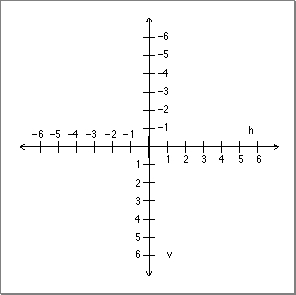
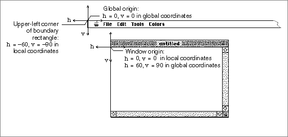
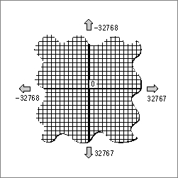
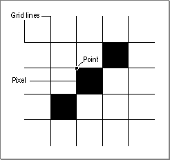

Legacy Document
Important: The information in this document is obsolete and should not be used for new development.
Important: The information in this document is obsolete and should not be used for new development.


QuickDraw's Coordinate Plane
Your application typically uses Window Manager routines to create graphics ports in the form of windows. Your application can draw into a window without regard to its location on the screen--even if the window spans more than one screen. This is possible because QuickDraw maintains a global coordinate system for a computer's entire potential drawing space and a different local coordinate system for every window displayed in this space.The Macintosh screen (or screens) on which QuickDraw displays your images represents a small part of a large global coordinate plane. Coordinates in the global coordinate system reflect the entire potential drawing space on this plane. The (0,0) origin point of the global coordinate plane is assigned to the upper-left corner of the main screen--that is, the one with the menu bar--while coordinate values increase to the right and (unlike a Cartesian plane) down. Any pixel on the screen can be specified by a vertical coordinate (ordinarily labeled v) and a horizontal coordinate (ordinarily labeled h). Figure 1-2 illustrates the QuickDraw global coordinate plane.
Figure 1-2 The QuickDraw global coordinate plane

Windows are rectangular areas that are subsets of the global coordinate plane. Each window represents its own QuickDraw graphics port. When you create a window, the Window Manager uses QuickDraw to create a graphics port in which the window's contents are displayed. (See the chapter "Window Manager" in Inside Macintosh: Macintosh Toolbox Essentials for a complete description of creating and managing windows.)
- Note
- The orientation of the vertical axis, while convenient for computer graphics, differs from mathematical convention. Also, the coordinate plane is bounded by the limits of QuickDraw coordinates, which range from -32768 to 32767.

When your application creates a new graphics port, QuickDraw defines a boundary rectangle, which, by default, is the entire main screen; this rectangle links the local coordinate system of a graphics port to QuickDraw's global coordinate system and defines the area of the pixel image or bit image into which QuickDraw can draw. A boundary rectangle is stored in the pixel map for a color graphics port or in the bitmap for a basic graphics port.
The graphics port includes a field called
portRect, which defines a rectangle to be used for drawing. In a graphics port that represents a window, theportRectrectangle--or simply, the port rectangle--represents the window's content region.When you use the Window Manager to place a window on the screen, you specify the location of its port rectangle in global coordinates. However, within the port rectangle, the drawing area is described using a local coordinate system. You draw into a window in local coordinates, without regard to the window's location on the screen. Figure 1-3 illustrates the local and global coordinate systems for a sample window that is 180 pixels high by 300 pixels wide, placed with its window origin 90 pixels down and 60 pixels to the right of the upper-left corner of the main screen.
Figure 1-3 A window's local and global coordinate systems

It is helpful to conceptualize the global coordinate plane as a two-dimensional grid--one with integer coordinates ranging from -32768 to 32767--as illustrated in Figure 1-4.Figure 1-4 The coordinate plane

The intersection of a horizontal and a vertical grid line marks a point on the coordinate plane. Notice that, because all coordinates are limited to simple integers, the QuickDraw plane is finite, although very large: there are over four billion points on the grid, many more than there are dots on any screen. When using QuickDraw, you associate small parts of the grid with areas on the screen.Note also the distinction between points on the coordinate grid and pixels, the dots that make up a visible image on the screen. Figure 1-5 illustrates the relationship between the two: the pixel is down and to the right of the point by which it is addressed.

As the grid lines are infinitely thin, so a point is infinitely small. Pixels, by contrast, lie between the lines of the coordinate grid, not at their intersections. This gives them a definite physical extent, so that they can be seen on the screen.After your application creates a window, the user can move or resize it within the global coordinate system. However, to draw images into the window, your application needs only to specify pixels within the local coordinate system for that window.
Your application uses a cursor to allow the user to select all or part of the content of a window. A cursor is a 16-by-16 pixel image that appears on the screen. Called the pointer in Macintosh user manuals, the user controls the cursor with the mouse. Basic QuickDraw supplies a predefined cursor for your application: the arrow cursor, which is familiar to all Macintosh users. Your application can also use other cursors. For example, when the user moves the cursor to any text in your application, your application should change the arrow cursor to an I-beam cursor and, when performing a lengthy process that precludes the user from interacting with your application, your application should change the cursor to a wristwatch cursor or an animated cursor.
One point in the cursor's image is designated as the hot spot, which in turn points to a location on the screen. The hot spot is the portion of the cursor that must be positioned over a screen object before mouse clicks can have an effect on that object. For example, when the user presses the mouse button, the Event Manager function
WaitNextEventreports the location of the cursor's hot spot in global coordinates. Your application can use the basic QuickDraw procedureGlobalToLocalto convert the global coordinates of that point to local coordinates for the window.